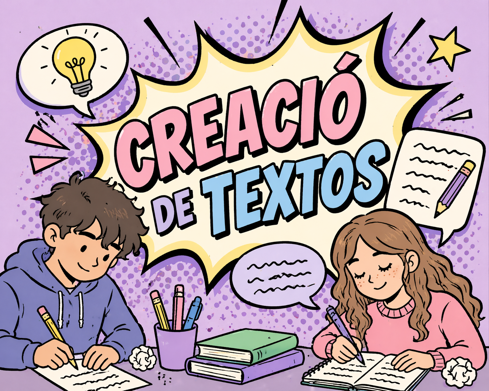

Creació de textos adaptats per nivells
Quan utilitzem els prompts per a comunicar-nos amb una IA, com per exemple, Claude, la qualitat de les respostes que rebem dependrà directament de com formulem aquestes instruccions i del fil de la conversa que mantinguem.
No és realista esperar resultats excel·lents amb una sola pregunta, ni assumir que la manera en què ens expressem és irrellevant: tant la manera de redactar els prompts com el desenvolupament del diàleg són factors determinants per a obtindre una bona experiència amb l'eina.

A continuació vorem un decàleg per a generar textos amb IA segons el nivell lingüístic amb exemple de prompts per a claude.ai
1. Especifica sempre el nivell
Com més clara siga la referència al nivell, més ajustat serà el text generat. El MECR és un marc reconegut internacionalment que la IA interpreta bé. També pots complementar-ho descrivint breument les característiques del grup.
"Genera un text en espanyol de nivell A2 segons el MECR. El grup són persones adultes que porten sis mesos aprenent espanyol i entenen frases simples sobre temes quotidians."
2. Defineix el vocabulari
Sense aquesta indicació, la IA pot usar paraules fora de l'abast de l'alumnat. Delimitar el camp lèxic garanteix que el text siga comprensible i, al mateix temps, útil per a ampliar el vocabulari dins d'un tema concret.
"Escriu un text breu sobre anar al metge usant únicament vocabulari bàsic relacionat amb la salut: símptomes comuns, parts del cos i expressions de cortesia. Evita tecnicismes mèdics."
3. Controla la longitud
L'extensió del text ha de ser proporcional al nivell i a l'objectiu didàctic. Un text massa llarg pot desmotivar en nivells inicials; massa curt pot resultar insuficient en nivells intermedis.
"Redacta un text d'entre 80 i 100 paraules, adequat per a un nivell A1, sobre la rutina matutina d'una persona."
4. Ajusta la complexitat sintàctica
L'estructura de les frases és un dels factors que més influeix en la dificultat d'un text. Per a nivells baixos, frases curtes i coordinades; per a nivells mitjans, pots introduir subordinades causals, temporals o condicionals simples.
"Escriu un text per a nivell B1 usant oracions compostes amb connectors com 'perquè', 'quan', 'encara que' i 'si'. Evita les oracions de relatiu i el subjuntiu."
5. Tria un context significatiu
L'alumnat adult aprén millor quan els textos connecten amb la seua vida real. Indicar el context vital del grup fa que el material siga molt més rellevant i motivador.
"Crea un diàleg de nivell A2 entre dues persones adultes que parlen sobre buscar treball. Inclou expressions útils per a una entrevista senzilla. El context és Espanya."
6. Indica el tipus de text
Cada gènere textual té les seues pròpies convencions lingüístiques. Especificar-ho ajuda a la IA a generar un model adequat a l'ús comunicatiu que es vol treballar a l'aula.
"Escriu un correu electrònic informal de nivell A2 en el qual una persona li demana a un amic que l'ajude a mudar-se el cap de setmana. Inclou salutació, cos del missatge i comiat."
7. Defineix el registre lingüístic
El registre determina el to i el vocabulari del text. Per a adults en situacions quotidianes o laborals, treballar tant el registre formal com l'informal és fonamental.
"Genera dues versions d'un mateix text sobre demanar una cita mèdica per telèfon: una en registre formal i una altra en registre col·loquial. Nivell B1."
8. Demana que s'eviten uns certs elements
Aquest tipus d'instrucció negativa és molt útil per a afinar el resultat. La IA tendeix a usar estructures variades per defecte, la qual cosa pot introduir dificultats no desitjades.
"Escriu un text narratiu de nivell A2 sobre les vacances d'una família. No uses el subjuntiu, ni el futur simple, ni expressions idiomàtiques. Usa només el present i el passat indefinit."
9. Sol·licita una versió i després ajusta-la
El treball amb IA és iteratiu. Rares vegades el primer resultat és el definitiu. Demanar ajustos progressius permet arribar a un text molt ben calibrat sense haver de reescriure el *prompt des de zero.
(Després d'obtindre una primera versió) "El text està bé però és massa difícil per al meu grup. Simplifica les tres últimes frases i substitueix les paraules subratllades per altres més senzilles: 'establiment', 'acudir' i 'sol·licitar'."
10. Valida el resultat amb criteri docent
La IA no coneix al teu alumnat, ni la seua història, ni les seues dificultats específiques. El text generat és un punt de partida, no un producte final. La mirada pedagògica del docent és imprescindible per a adaptar-lo al grup real.
"Actua com a experta en didàctica de llengües. Revisa aquest text que he generat per a un grup de nivell A1 i dis-me si el vocabulari i la sintaxis són adequats per a eixe nivell. Assenyala qualsevol element que puga resultar massa difícil."